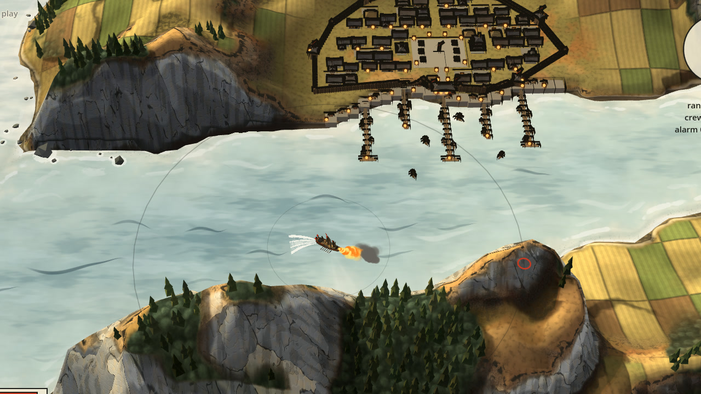
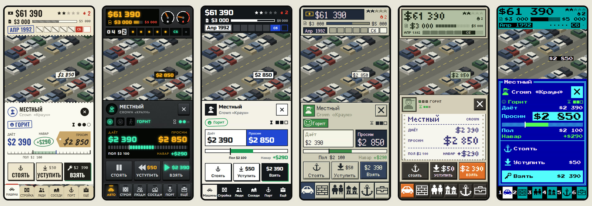

В пятницу в 18:30 по Владивостоку начался Дальневосточный хакатон. Его проводит ДВФУ как финал своей Школы видеоигровой разработки, участвовать может кто угодно, а проходит он на MyIndie. Записалась 31 команда. Правила короткие: 72 часа, игра должна быть об истории и культуре Дальнего Востока. Часть команд сидит в зале на кампусе на острове Русском. Мы участвуем из-за стола в Сиднее.
Половина нашей студии из Владивостока, так что тема для нас домашняя. Выбрать одну из двух идей мы не смогли и делаем обе, за те же 72 часа. Это возможно только из-за того, как мы работаем: один человек и один ИИ. Этот девлог как раз об этом, по часам. Потом будут день второй и день третий.

Две игры
«Железная джонка» (по-английски Pirates of the Japan Sea). 1220 год. Берег, где сейчас стоит Владивосток, принадлежит Восточному Ся, государству чжурчжэней, а в 1233-м сюда дойдут монголы. У вас одна джонка с вёслами, команда лучников и метатель огненных бомб. Вы ведёте корабль сами, бой идёт две-три минуты, можно нанимать лодки, брать порты штурмом и тринадцать лет держать свои острова. Для компьютера, прямо в браузере.
«Правый руль: Зелёный угол». «Зелёный угол» — авторынок на сопке во Владивостоке, где с начала девяностых полстраны покупало подержанные праворульные машины прямо с пароходов из Японии. Вы начинаете в апреле 1992 года на грунтовой площадке, которую оставил дядя, с несколькими машинами, которые привезли моряки. В будни готовите машины, в субботу и воскресенье продаёте, и площадка за площадкой двигаетесь к воротам рынка — до декабря 2008-го. Пиксельный тайкун для телефона в вертикальном положении.
Кто что делает
Машина — это Claude Code. Она сидит в папке проекта, пишет каждую строчку игры, рисует пиксель-арт и шейдеры кодом, запускает игру без окна, чтобы её проверить, и кладёт каждую сборку туда, где в неё можно сыграть. Работает она сразу в несколько копий: в субботу утром три из них одновременно перерисовывали корабли, землю и города пиратской игры, каждая в своей копии проекта, а ещё три сидели в игре про машины.
Человек на этом хакатоне код не пишет. Вот что он делает:
- Выбирает, что это за игра. До игры про машины было шесть идей. Пять из них — работа руками: инспектор, парковщик, разгрузка парохода, ночной сторож, перегон колонны. Ответ был: «Я бы ни во что из этого не играл». Выжила одна идея, дядина площадка.
- Выбирает картинку. Машина не знает, что красиво. Она может показать варианты, а он показывает пальцем.
- Играет в каждую сборку и говорит простыми словами, что не так. Это бо́льшая часть работы.
- Решает. Ответы в одну строку, которые закрывают спор: «Рубли.» или «По берегу не ходим».
- Приводит других людей. В субботу утром в игру про машины сыграл друг из Владивостока. За завтраком на неё посмотрел дизайнер.
Игра первая: сначала была картинка
Пиратская игра началась в пятницу, за несколько часов до старта, с документа и пяти картин, которые нарисовала нейросеть: как должны выглядеть море, бой, форт и абордаж. Человек выбрал одну — тушь и размывка поверх освещённых сопок — и написал: «Я уже хочу в это играть». К началу хакатона у игры были карты, дизайн и эта цель. Кода не было. Всё, во что можно играть, написано после старта.


Через два с половиной часа после старта уже был корабль, на котором можно плыть. Дальше пошёл цикл, который не останавливается до сих пор: он десять минут играет, пишет несколько строк, машина через десять-сорок минут отвечает новой сборкой.
Медленно. Больше экшена, быстрее. Врагов вообще не нашёл.
Корабли стали на шестьдесят процентов быстрее, и теперь два-три патруля всегда пересекают ваш путь. Следующий вердикт был про обратное: враги оказались «какими-то супер-врагами». Машина написала противников, которые целились идеально и никогда не ошибались. Их сделали медленнее игрока, дали им половину его меткости и научили сдаваться.
Лучшее изменение дня тоже выросло из одной фразы. Первая карта работала как в большинстве игр: доплыл до края, нажал клавишу, увидел карту, выбрал место. Он написал: «Не хочу быстрых перемещений к другим берегам, это всё плавание — чтобы в любой момент можно было приблизиться и оказаться там, где ты есть на стратегической карте». К часу ночи всё море, 512 на 288 километров, стало одним куском воды. Крутите колесо назад, проходите сквозь облака — и смотрите на карту. Крутите вперёд в любом месте — и вы там на воде.

Игра вторая: семь сборок до обеда
«Зелёный угол» тоже начинался не с нуля, и честно будет это сказать: он стоит на наборе интерфейса из другого нашего тайкуна, VR Arcade Story. Правила, машины, площадка и люди — новые. Первая версия, в которую можно играть, была сохранена через пять часов после старта. Человек сыграл во вторую сборку около часа ночи и ответил:
Ок. Работы много. Меню мелкие. Слишком много текста, убери его в подсказки. Нужно больше значков. Продажа пролетает быстро, и непонятно, покупатель этот мужик или нет.
Потом он лёг спать, а машина нет. К его пробуждению в игре были календарь с 1992 по 2008 год, семь площадок, шестьдесят шесть моделей машин, моряки, аукционные листы, таможня и тайфун. Продажа стала сценой, на которую можно смотреть: покупатель идёт вдоль ряда, открывает дверь, пинает колесо, торгуется, жмёт руку, пересчитывает деньги.

В субботу утром пришли два мнения со стороны. Другу из Владивостока понравилось, и он попросил цены в рублях, больше разных машин, детали, которые узнают только местные, и чтобы машины не ездили друг сквозь друга. Дизайнер был строже: шрифты, заголовки, слишком много текста. «Видно, что это Claude».
Он прав, и это самая полезная фраза дня. ИИ, оставленный без присмотра, пишет абзац там, где человек нарисовал бы значок. Поэтому машина нарисовала на одной странице шесть разных стилей интерфейса, а человек выбрал четвёртый — тот, что сделан из пикселей, как мир под ним. Вопрос с рублями решился одним словом. И то и другое делается прямо сейчас, пока пишется этот текст.

Две игры одновременно
На практике это выглядит так. Два окна, по одному на игру, в каждом своя машина, которая ведёт свои записи о том, что решено. Человек играет в первую игру, пока вторую пересобирают, потом меняет их местами. Каждая машина раздаёт крупные задачи помощникам и проверяет их работу до того, как она попадёт в сборку. Ни одна игра не ждёт другую, а в дефиците только внимание человека. Это и есть настоящий предел такого способа работы, и именно поэтому вердикты такие короткие.
Где машина ошибается
- Она не слышит. Звук пиратской игры собирается из чисел при запуске, и машина проверила в нём громкость и щелчки на стыках. Хорошо ли он звучит — никто не узнает, пока человек не наденет наушники.
- Она не отличает «весело» от «правильно». На сборке с непобедимыми врагами все проверки прошли. Позже она так занизила врагам смелость, что от целого корабля убегали все до одного, — и проверки снова прошли.
- Один раз она сломала игру. В одиннадцать вечера в проект ушла правка с испорченной строкой, и игра не запускалась. Починили за три минуты. С тех пор ничего не сохраняется, пока игра не запустилась и не напечатала ноль ошибок.
- Она пишет слишком много текста. См. выше.
- Она кончается. В субботу помощники упёрлись в лимит посреди правки и оставили после себя девяносто четыре упавшие проверки. Работу подхватила другая модель.
- Историю она знает по памяти. Даты, названия и цены в обеих играх ещё нужно сверить с настоящими источниками, а для «Зелёного угла» — с людьми, которые там были.
Почти всё это ловит не ум, а проверки. У пиратской игры их двенадцать, 176 отдельных тестов: плавание, бой, видимость, призы, наёмные лодки, карта, торговля, удержание вод, оружие, сохранение, звук и тринадцать лет истории. У игры про машины есть бот, который проходит её с 1992 по 2008 год за шестнадцать секунд. Именно бот, а не человек, нашёл сломанную позднюю игру: на третьей площадке он закончил с долгом в 125 тысяч долларов.
Первый день в цифрах
- Семнадцать с половиной часов со старта, из них человек спал примерно шесть.
- «Железная джонка»: 36 сохранённых версий, около 9800 строк кода игры, 19 шейдеров, 12 проверок, целое море.
- «Зелёный угол»: сборка 7, 78 моделей машин от 9 производителей, 7 площадок, 17 лет календаря, музыка и 27 новых звуков.
- Строк кода, написанных человеком: ноль. Решений о том, какими должны быть игры, принятых машиной: так мало, как только получается.
Что дальше
Ещё два дня. Пиратам — абордаж отрядами, больше берегов, собранных вручную, музыка. «Зелёному углу» — новый интерфейс, рубли и Владивосток, который узнают местные. Ни одна из игр пока не открыта для всех; к вечеру понедельника обе уйдут на MyIndie для жюри, а после хакатона мы хотим выпустить обе по-настоящему, на всех площадках, какие их примут.
Дополнение от 23 ноября: в обе игры уже можно играть. Они идут в браузере, бесплатно, на itch.io: «Железная джонка» (компьютер с клавиатурой и мышью) и «Правый руль: Зелёный угол» (телефон или компьютер). Игра про машины есть и в Google Play в раннем доступе. Это сборки с хакатона, они меняются по нескольку раз в день.
Мы делаем игры открыто и меняем их по тому, что нам говорят. Если вы бывали на «Зелёном углу» в девяностые или знаете историю этого берега лучше машины, напишите нам: contact@goldenharbourgames.com. День второй — завтра.